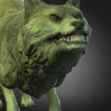
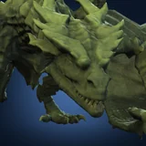
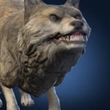
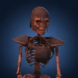
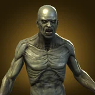

How alliances count
Counting units toward alliance steps.
Every unit belongs to one or more alliances. Field enough different members and the alliance reaches a step and grants its effect. This page states exactly what is counted. What each alliance grants is on its own page, listed in the table below and on the alliances index.
What counts
- Only units on the board count. Units on the bench never count. The tooltip of an alliance lists members on your bench as 'On bench (not counted)', but they add nothing.
- Each different unit counts once. Two copies of the same unit count as one, whatever their stars. A two star unit counts the same as a one star unit.
- A unit counts toward every alliance it carries, all at the same time.
- Some items add to an alliance's count (listed below). Such an item only counts while at least one real member of that alliance is on your board.
- Your commander never counts toward any alliance.
- Summons and placeables never count. The count is fixed when the fight starts and nothing created during the fight changes it.
- The count is taken from your board as it stands when the fight starts, after auto deploy and the unit cap have been applied (see Board and bench). A unit that dies during the fight still counts for that fight.
Steps and whom they reach
An alliance has one or more steps, each with the count it needs. The highest step you have reached is the one that applies, and only that one: the figures of a step are totals, not additions to the step below. Counts between two steps give nothing extra.
Each step also says whom its effect reaches:
| Reaches | Meaning |
|---|---|
| Members of the alliance | Every unit of yours that carries the alliance, including summons that carry it. |
| All your units | Every unit on your side: members, other units, your commander and your summons. |
| A random member | Members picked at random when the fight starts, as many as the step says. Units that appear later are not picked. |
| All enemy units | Every unit on the enemy side, including enemy summons that appear later. |
Every alliance
The 33 alliances of Warspire, the counts their steps need and how many different units carry each. Which unit carries which is on the Alliance matrix.
| Alliance | Kind | Steps at | Reaches | Units in the shop | Summons carrying it | Count item |
|---|---|---|---|---|---|---|
 Abyssal Abyssal | Race | 1 / 2 | members of the alliance | 5 | 0 | Abyssal Emblem |
 Arcanist Arcanist | Class | 3 / 6 | all enemy units | 8 | 0 | none |
 Artificer Artificer | Class | 2 / 4 | members of the alliance | 5 | 0 | none |
 Ashen Ashen | Race | 3 / 6 | members of the alliance | 6 | 0 | none |
 Bulwark Bulwark | Class | 2 / 4 / 6 | members of the alliance | 7 | 0 | none |
 Conjurer Conjurer | Class | 2 / 4 | members of the alliance | 5 | 18 | none |
 Cutthroat Cutthroat | Class | 3 / 6 | members of the alliance | 8 | 0 | Cutthroat Badge |
 Drowned Drowned | Race | 2 / 4 | all your units | 5 | 0 | none |
 Duelist Duelist | Class | 3 / 6 | members of the alliance | 8 | 0 | Duelist Token |
 Feral Feral | Race | 2 / 4 / 6 | members of the alliance; all your units | 6 | 0 | none |
 Grovekeeper Grovekeeper | Class | 2 / 4 | one random member; 2 random members | 5 | 0 | none |
 Ironsight Ironsight | Race | 1 | members of the alliance | 3 | 0 | Ironsight Monocle |
 Mender Mender | Class | 2 / 4 | all your units | 5 | 0 | none |
 Mirefolk Mirefolk | Race | 2 / 4 | members of the alliance | 5 | 0 | none |
| Oathbound | Race | 2 | members of the alliance | 3 | 0 | Oathbound Insignia |
 Paragon Paragon | Class | 1 | members of the alliance | 1 | 0 | none |
 Ravager Ravager | Class | 2 / 4 | members of the alliance | 4 | 0 | Ravager Seal |
 Riftborn Riftborn | Race | 2 / 4 | members of the alliance | 5 | 0 | none |
 Scrapkin Scrapkin | Race | 2 / 4 / 6 | one random member; members of the alliance; all your units | 6 | 0 | none |
 Shade Shade | Class | 2 / 4 | members of the alliance | 5 | 0 | Shade Pennon |
| Soulbinder | Class | 2 / 4 / 6 | members of the alliance | 7 | 0 | none |
 Spireborn Spireborn | Race | 2 / 4 / 6 | all your units | 8 | 0 | none |
 Stalker Stalker | Class | 3 / 6 | members of the alliance | 8 | 0 | Stalker Crest |
 Stoneborn Stoneborn | Race | 2 / 4 | members of the alliance | 5 | 0 | none |
 Sundered Sundered | Class | 3 | all your units | 4 | 0 | none |
 Swarmkin Swarmkin | Race | 2 / 4 | one random member | 5 | 0 | none |
 Thornkin Thornkin | Race | 2 / 4 / 6 | one random member | 6 | 0 | none |
 Triad Triad | Race | 3 | members of the alliance | 4 | 0 | none |
 Venomist Venomist | Class | 3 | members of the alliance | 4 | 0 | Venomist Sigil |
 Warden Warden | Class | 3 / 6 | members of the alliance | 7 | 0 | none |
 Watcher Watcher | Class | 2 / 4 | members of the alliance; all your units | 5 | 0 | none |
 Wight Wight | Race | 2 / 4 / 6 | all enemy units | 6 | 0 | none |
 Wyrmblood Wyrmblood | Race | 2 | members of the alliance | 3 | 0 | none |
Items that add to a count
These items are not worn by a unit. Once taken they work for your whole warband for the rest of the match (see Loot and items). Each adds to the count of one alliance as if another different member stood on the board, on the condition that at least one real member does.
| Item | Alliance | Adds | Tier | Copies you may own |
|---|---|---|---|---|
 Oathbound Insignia Oathbound Insignia | Oathbound | +1 | Tier 1 | 1 |
 Venomist Sigil Venomist Sigil | Venomist | +1 | Tier 2 | 1 |
| Cutthroat | +1 | Tier 2 | 1 | |
 Shade Pennon Shade Pennon | Shade | +1 | Tier 2 | 1 |
 Ironsight Monocle Ironsight Monocle | Ironsight | +1 | Tier 2 | 1 |
 Stalker Crest Stalker Crest | Stalker | +1 | Tier 3 | 1 |
 Abyssal Emblem Abyssal Emblem | Abyssal | +1 | Tier 3 | 1 |
 Ravager Seal Ravager Seal | Ravager | +1 | Tier 3 | 1 |
 Duelist Token Duelist Token | Duelist | +1 | Tier 3 | 1 |
Aces
An ace is a tier 5 unit tied to one alliance. While the ace is on your board and that alliance has at least one step active, the ace adds an effect of its own on top of the step. The ace counts toward its alliances like any other unit. Two copies of the same ace give the effect once when it reaches your whole side. Having that alliance active also makes its ace more likely to appear in your shop. The effects are on Aces.


Summons as members
A summon never adds to a count, but it can receive an alliance's effect. A step that reaches members also reaches any summon that carries the alliance, from the moment it appears. A step that reaches all your units reaches every summon.
    Conjurer is the alliance built around summons. 18 summons carry it and receive its active step as members do (the steps are listed under alliances that strengthen summons):  Rift Echo
Rift Echo Greater Rift Echo
Greater Rift Echo Carrion Wing
Carrion Wing Thorn Sapling
Thorn Sapling Bramble Golem
Bramble Golem Mire Ward
Mire Ward Cinder Mite
Cinder Mite Spire Bear
Spire Bear Skitterling
Skitterling Brood Hatchling
Brood Hatchling Pact Bruiser
Pact Bruiser Pit Golem
Pit Golem Stormhide Beast
Stormhide Beast
Some alliances create summons as their effect: Riftborn creates Rift Echo, Greater Rift Echo; Thornkin creates Thorn Hound, Carrion Wing, Elder Thornwyrm; Swarmkin creates Skitterling. The full list is on Summons and placeables.
How alliance effects enter the fight
- At the start of the fight each side's alliances are counted and the active step of each is handed out before any unit acts. Units enter the fight with the bonus already in place, so a health bonus is full health from the first moment.
- A step can give a lasting bonus, a trigger, or both. A lasting bonus is a set of stat changes that stays for the whole fight and cannot be dispelled. A trigger is an effect that fires on an event, for example when the unit lands an attack or dies. The stats are explained on Stat reference and the events on Triggers and targeting.
- A trigger is given to each unit the step reaches, and each of those units fires it for itself.
- Units that appear later on a side (summons) receive the lasting bonuses and triggers that reach them at the moment they appear. Steps that pick random members are the exception: the pick is made once, at the start.
- A step that reaches all enemy units is placed on the enemy side in the same way, and on enemy summons as they appear.
- Both sides count separately. If you and your opponent field the same alliance, each gets its own step.
- Items that strengthen your whole warband are handed out at the same moment and also reach summons: War Drums, Battle Hymn, Iron Discipline, Scholar's Index, Last Stand Banner, Warmaster's Codex.
A worked example
Oathbound needs 2 for its first step. Start with 1 member on the board and follow the count:
| Change | Oathbound count | Result |
|---|---|---|
 Oath Cutter on the board Oath Cutter on the board | 1 | no step active |
| Add a second Oath Cutter to the board | 1 | no step active: a copy adds nothing |
| Keep Oathkeeper Thane on the bench | 1 | no step active: the bench adds nothing |
| Take the item Oathbound Insignia | 2 | step 1 active |
| The item alone, with no Oathbound unit on the board | 0 | no step active: the item needs a member on the board |
| Move Oathkeeper Thane onto the board (no item) | 2 | step 1 active |
These units each carry more than one alliance, so those 2 units count toward all of these at once: